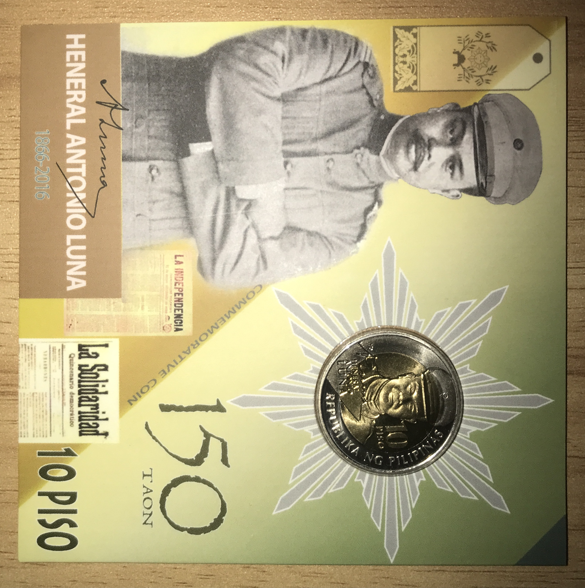
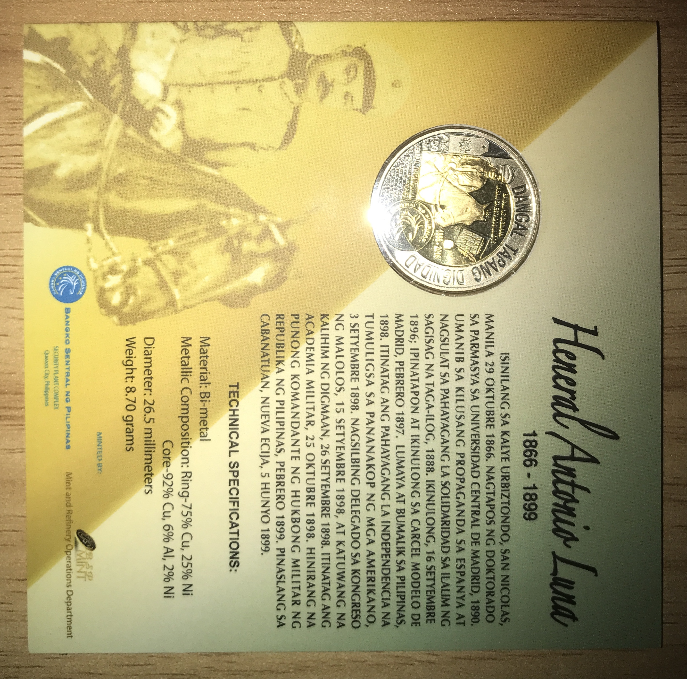

A Coin of a General

Hello there, I present to you here another commemorative coin from the BSP. Released on 2016, the ₱10.00 Heneral Luna “150 Taon” coin. It commemorates the 150th birthday of arguably the greatest Filipino general of the Philippine-American war. Above is a photo of the obverse. Like the Papal Visit coin, the relief is frosted, while the field has a mirror finish.
Being that it’s in the original government packaging, a good photo of the edge can’t be taken. That said, it appears to have a reeded edge. It is a bi-metallic coin, with the core being gold-colored alloy and the ring being a silver-colored alloy. Of course, the components are less precious than the shades suggest, being copper, aluminum, and nickel.
At the core of the obverse is an image of the general from the shoulder up. To his left in the core is the denomination: 10 Piso. Bordering this in the ring is the legend “Republika ng Pilipinas”. Overlapping both is the name and signature of the general, at his bottom right. His hat also overlaps both, with the top in the ring and the bottom in the core.

Here is a photo of the reverse. The legend at the ring contains three words: Dangal (Honor), Tapang (Courage), and Dignidad (Dignity). I surmise that they represent the core values of the general. Also in the ring is his rank and his age.
Below that would be his name and a wall of text stating the denomination on repeat, both overlapping the ring and the core. Beside them, also overlapping the two parts, is a logo of the BSP. Also overlapping is an image of the general riding a horse. Much of him is in the core, with the hat, right eye and shoulder being the ones in the ring.
The entire horse is in the core. At the top of said core is his achievement: Bayani ng Digmaan Laban sa Estados Unidos. His date of death is directly below “1899”. Sadly, he was killed, not by the Americans, but by his own countrymen.
Hinting his past in the core would be what appears to be the newspaper “La Solidaridad” and a bottle of ink, with a pen dipped in. He was one of the writers, showing that his resistance stretches from the time of the Spaniards. Finally, below is the mark “1866-2016”, showing that it’s his 150th birthday. That is all.